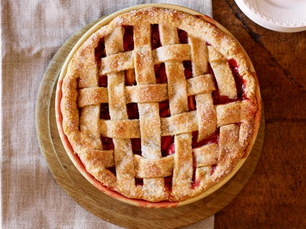

Cherry Pie

Cherry pie is considered a classic dessert in many cultures and is loved by many for its sweet, tart, and juicy filling encased in a flaky and buttery crust.
Ingredients
- For the Pie Crust:
- 1/3 cup cold unsalted butter
- 1/3 cup cold shortening, diced
- 2 1/2 cups all-purpose flour
- 1/2 teaspoon salt
- 1/4 cup cold water
- For the Filling:
- 7 to 8 cups fresh tart cherries, or 6 cups frozen
- 1 1/4 cups sugar, divided
- 1/4 cup cornstarch
- 1 tablespoon lemon juice
- 1 teaspoon vanilla extract
- 1/4 teaspoon almond extract
- 1 tablespoon butter, diced
Instructions:
- Grate the butter with a cheese grater into a bowl. Add the shortening, flour, and salt.
- Cut the butter and shortening into the flour with a pastry blender until the fat is dispersed throughout the flour. The butter and shortening should all be pea to bean-sized pieces.
- Add the water a little at a time until you have a rough dough.
- Form the dough into two balls and flatten. Wrap one in plastic wrap and place in the fridge.
- Roll one ball of dough into a round that's about 1/8-inch thick and 12 inches across.
- Fit pie crust into a 9-inch pie dish. Press the dough all the way down and allow some of the dough to hang over the edge of the pie tin. Set aside. If your kitchen is warm, place the lined pie pan in the fridge.
- Gather the ingredients. Preheat the oven to 375 F.
- Pit the cherries using a cherry pitter for the fastest results. Thaw the cherries if you are using frozen.
- Thoroughly drain the cherries once you are done pitting or thawing. Then combine them in a large bowl with 3/4 cup of the sugar, the cornstarch, lemon juice, vanilla extract, and almond extract. Stir to combine, and taste. Add more sugar (up to 1 1/4 cups) if necessary and stir to combine.
- Fill the bottom pie shell with the cherry mixture and dot the top with the diced butter.
- Roll out the other pie dough circle into a 10-inch circle. Cut the circle into 1-inch strips.
- Lay four of the strips over the filling in the same direction.
- Fold alternating strips over themselves halfway and place another strip in the center of the pie to create the lattice design.
- Fold the strips back over the center strip. Repeat alternating which strips you fold back.
- Repeat on the other side of the pie.
- Crimp the edges of the pie crust together, trimming as needed and sealing.
- Sprinkle the top of the pie with granulated sugar.
- Transfer the pie to the oven and bake for about 45 minutes, or until the crust is golden brown and flaky and the filling is bubbly. Cool on a wire rack for at least 2 hours before slicing.
Print Recipe
Strawberry-Rhubarb Pie

Strawberry-rhubarb pie is a popular dessert because it combines the sweet and tangy flavors of fresh strawberries and tart rhubarb in a delicious, buttery crust.
Ingredients
- For the crust:
- 2 cups all-purpose flour, plus more for dusting
- 1/2 teaspoon salt
- 2 sticks cold unsalted butter, cut into chunks
- 2 tablespoons milk
- 2 tablespoons coarse sugar
- For the filling:
- 1 1/4 pounds rhubarb
- 2 pints strawberries
- 1 cup granulated sugar
- 2 heaping tablespoons all-purpose flour
- 1/2 teaspoon ground cinnamon
- Pinch of salt
- 2 teaspoons vanilla extract
- Juice of 1/2 lemon
Instructions:
- Make the crust. Combine the flour, salt and butter in a large bowl. Gently cut the butter into the flour using 2 sharp knives in a crisscross motion until the butter is about the size of small peas. (The lighter the hand, the flakier the crust.) Slowly drizzle in 1/2 cup ice water and fold into the mixture with a fork until the dough comes together-you want to work the dough as little as possible. Add more water, 1 tablespoon at a time, if the dough is too dry. Turn the dough out onto a floured surface and divide into 2 balls. Form each into a disk, wrap in plastic and refrigerate at least 30 minutes.
- Meanwhile, trim the rhubarb and cut into 1/2-inch pieces. Hull the strawberries and slice. Combine the rhubarb, strawberries, granulated sugar, flour, cinnamon, salt, vanilla and lemon juice in a large bowl; toss.
- Prepare the bottom crust. Preheat the oven to 425 degrees F. Roll out 1 disk of dough on a floured surface into a 12-inch round. Roll the dough onto the rolling pin, then carefully unroll it over a 9-inch pie plate. Gently press the dough into the plate with your fingers. Add the strawberry-rhubarb filling. Do not trim the overhanging dough.
- Make the lattice. Roll out the remaining disk of dough into a 12-inch round. With an old-fashioned crimper, sharp knife or pizza cutter, cut into 1-inch-wide strips. Lay about half of the strips on the pie in one direction, about 1/2 inch apart. Fold back every other strip halfway. Lay a strip perpendicular to the first ones. Unfold the strips back over the new strip, then fold alternate strips back halfway. Add another perpendicular strip; unfold the strips back over it. Repeat to form a lattice. Pinch the overhanging top and bottom crusts together, trimming as needed, then fold the dough under itself and crimp with your fingers.
- Bake the pie. Using your fingers, pat the lattice top with milk and sprinkle with coarse sugar. Put the pie on a baking sheet and place in the preheated oven. Bake 20 minutes, then reduce the oven temperature to 375 degrees F and bake until the crust is golden brown and the filling is bubbling, 50 more minutes. Let cool completely before slicing.
Print Recipe